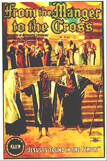
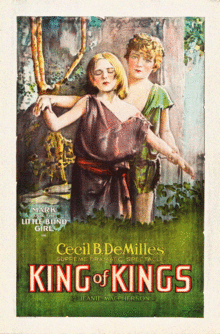
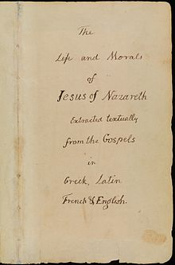

Course: Jesus in the Movies
Lecture #1: Introduction
We will approach this course by discussing the films most often cited in literature about how Jesus has been treated on the screen. These films are made by commercial studios for commercial use, not by religious organizations for evangelistic or educational purposes. The sole exception will be John Heyman's "Jesus" which began in commercial theatres but has ended up being used for evangelistic purposes.
The films are done in chronological order insofar as possible and we will view relevant portions of each. We will deal with each film in four areas.
First: background information on the making of the film, main contributors, how the film presents the story of Jesus with attention to how the material from the NT gospels has been used. How the film portrays Jesus and the relation of this portrayal to other characterizations of Jesus from gospels or other writings. and finally, the response to the film by the general public and by religious groups and the secular press.
By common reckoning, commercial cinema was born on December 28, 1895, in Paris, France in the basement of the Grand Cafe when the Lumiere brothers, using their Cinematographe projected a series of ten films for a PAYING audience. Lasting only about a minute each they showed scenes of everyday life.
For a moment, the Lumiere brothers had advanced beyond Edison's ability but not for long. However, within four months, Edison had acquired his own machine called the Vitagraph. The first commercial showing of films using Edison's projector occurred on April 23, 1896 in NYC also showing scenes of everyday life.
Almost from the first, filmmakers turned to the Jesus story as a source for subject matter and profit, though it would be 30 years till there was talking film.
First, film represents a medium with many dimensions that brings together virtually all the arts to create a moving picture. In the early years, the traditional passion play--with its focus on the last week of Jesus life--provided an immediate dramatic basis and model for re-telling Jesus' life. This was usually based on the famous passion play at Oberammergau begun in 1634 in Bavaria and done every 10 years since then.
A brief film "La Passion" (1897) from France has been identified as the first film to chronicle the life of Jesus and probably the first to be based on any portion of the bible. It is no longer extant but has been described as consisting of 12 scenes with a screening time of about 5 minutes.
Others followed, including the Passion play of Oberammergau (1898) which had 23 scenes and ran about 20 minutes. It had no titles on the screen and thus required a live narrator to provide commentary which was complemented by live music. However, as the critics pointed out, it was filmed on the roof of the Grand central palace in NYC, not in Bavaria.
Secondly: film as an artistic and entertainment medium appeared over a hundred years after the commencement of--and has developed alongside--that scholarly and historical preoccupation with the Jesus story known as "the quest for the historical Jesus".
The so called "quest" began in earnest late in the 18th century with the recognition that a distinction could be made between "the Christ of Faith", which designated Jesus as confessed to be the Christ in the writings and traditions of the Church, and "the Jesus of History" which designated Jesus as reconstructed to have lived in first century Palestine based on the historical interpretation of all available evidence.
This "quest has sought in its own way to bring to life Jesus and his story. The innumerable written "lives" and lesser sketches of "the historical Jesus" bear witness to this, each claiming to present what Jesus was really like.
Over the past two centuries, this historical quest has expressed itself in three principal movements.
The 19th century quest, or the "old quest" was chronicled by Albert Schweitzer in his massive volume The Quest for the Historical Jesus (1906). To him Jesus had been a "mistaken apocalyptist" who wrongly believed that the world would end in his own day. The first quest was drawing to a close just as cinema was beginning.
As we have just discussed, films first turned to the tradition of the passion play rather than the conclusions of scholarly investigations.
The "new" or "second" quest goes from Schweitzer’s generation at the turn of the century thru the early 1980's. these various historical reconstructions of Jesus include: Jesus as "the incarnation of God", "the plotting Messiah", "The suffering servant", "a prophet", "a zealot", and "a magician".
More recently, renewed interest in what Jesus was like has resulted in a "third quest" which has moved from purely academic circles into the public arena. This is evident when Jesus appeared on the covers of Time, US News & World report, and Newsweek the same week, Easter week of 1996. Among the several profiles featured there were those that described Jesus as "a Mediterranean Jewish Peasant" and a "marginal Jew".
Out of these various "quests" have come enlarged understandings of the gospels as well as renewed interest in Jesus himself. These insights have become increasingly available to filmmakers as they moved from the passion motif to create their own cinematic portrayals of Jesus. Audiences too have increasingly brot these literary and historical insights with them to their viewings of Jesus on the screen.
THE PROBLEM OF JESUS IN FILM
The problem of the cinematic Jesus encompasses at least four dimensions: These are the artistic, the literary, the historical, and the theological. These will be discussed with each film later.
FIRST: The ARTISTIC dimension is the fact of film itself. Film possesses its own integrity as an art form and storytelling medium. Since 1927-28, the film industry has tried to recognize artistic excellence by giving Oscars. There are, of course many film festivals that do the same around the world.
One of the problems with Jesus films from the beginning is that the filmmaker must decide whether to duplicate familiar images of Jesus from art or not. A critic of the 1927 KING OF KINGS by De Mille was that he simply did scenes that were reproductions of famous paintings.
Just by living in American or Western society we develop images of Jesus in our minds. Preconceptions about Jesus' visual appearance need not be derived from church attendance or membership. They can come from great art, family bibles, or even billboards or watching TV.
SECONDLY: The written sources available for fashioning of coherent screenplays are a problem. The four canonical gospels contain only limited information about Jesus and his outer life. They report virtually nothing about his inner life and his motivation.
These four gospels themselves present two very different portrayals of Jesus. The Synoptic gospels, Matt., Mark and Luke, center Jesus’ message around the phrase "The Kingdom of God" (or Kingdom of Heaven in Matthew). Jesus delivers his message in striking parables and maintains a certain secrecy about his work and identity.
The similarity between these three gospels is explained by literary dependence. Mark was written first and both Matthew and Luke had a copy of Mark. Matt. and Luke also had, theoretically, a source called Q for quelle, or source in German, which evidently had the sayings, parables but no narrative connection.
By contrast, in John's gospel Jesus openly proclaims himself as one sent into the world by God, audaciously introduces sayings with the words "I Am", and weaves these sayings into long, repetitive discourses.
The judgement today remains, in most scholarly quarters, that the teachings of Jesus in John's gospel results more from a creative process than from historical memory. Bluntly put, the lengthy discourses by Jesus in John represent statements put on Jesus' lips by his followers after his death, not sayings spoken in his lifetime.
However, narrative details in John are often viewed by scholars as being more accurate historically than corresponding details in the synoptics.
A challenge for any filmmaker is how to bring together these two very different presentations into some coherent characterization of Jesus and his story.
THIRDLY: the historical dimension of the problem is the recognition that a distinction can be made between the stories about Jesus as written in the gospels in the last third of the first century and Jesus the historical figure who lived out his life in Roman occupied Palestine in the first third of that century. Thus, the problem of the "Christ of Faith" and the "Jesus of History".
This problem leads to one we will look at in various films: the problem of antisemitism. Increasingly filmmakers have had to deal with the issue of historicity, not "How did this look?" but "did this actually happen?" Other gospels have to be considered now as well: ex: Gospel of Thomas.
FOURTHLY; The theological dimension of the problem has to deal with the faith claims made about Jesus. Because of Jesus' place in the culture at large as well as the church, most persons who see Jesus on the screen assume they know what he looks like and many, in the church at least, have a personal stake in him and his story.
A good case and point is the movie THE LAST TEMPTATION OF CHRIST directed by Martin Scorsese and the controversy around it. the controversy involved not only the incarnation but the very idea that Catholics, evangelical protestants or conservatives ascribe to such words as "inerrancy" or "infallibility" to those NT documents presupposed by all Jesus' films. Any perceived departure by a film from the written NT text can bring condemnation and protest--particularly if that departure involves sexual temptation.
Other Christians, liberal catholic or protestant, may be comfortable with the notion of Jesus as a fully human being--even a man with domestic and sexual inclinations. This understanding of Jesus is more in line with the social gospel, the 1897 book In His Steps by Charles Sheldon where Jesus appears not as God to be worshipped but as an example to be followed.
The viewer of a Jesus film must face this four-part question: To what extent is this film about Jesus not only CINEMATICALLY interesting, but LITERARILY sensitive to the gospel sources, HISTORICALLY probable, and THEOLOGICALLY satisfying?
Those filmmakers who have dared to bring Jesus to the screen have faced a difficult task indeed.
TWO TRAJECTORIES OF JESUS IN FILM;
The succession of Jesus films in this tradition has proceeded along two interrelated trajectories. Each of these represents an approach to the Jesus story that can be traced back into the history of the church and society long before there was cinema.
ON THE ONE HAND have been the films that approached the Jesus story in encyclopedic fashion by drawing on all four gospels. The word "HARMONY' will be used to identify those films whose stories represent a straightforward blending of all four gospels into a single narrative w/o mediation of another medium--such as a novel or play.
Among the films taking this HARMONIZING approach are Olcott's From the manger to the cross (1912), DeMille's popular classic King of Kings (1927), Samuel Bronston's action-drama King of Kings (1961), George Steven's meditative Greatest Story Ever Told (1965), and Franco Zeffirelli's ambitious Made for TV miniseries Jesus of Nazareth (1977).
These become increasingly inclusive in terms of amount of material incorporated with Jesus of Nazareth projecting the most coherent characterization of Jesus by skillfully combining Jesus as presented in the synoptics with Jesus as presented in John.
This harmonizing approach was anticipated by the earliest church by Tatian, a Christian from Mesopotamia when he combined the four gospels into one linear story about Jesus known as the Diatessaron ("four in one") and was used as scripture in the Syriac speaking church in Mesopotamia till the fifth century.
ON THE OTHER HAND an alternative approach to the Jesus story is to use other characters to tell the story by incorporating the story of Jesus into another story of ancient Rome.
Mervyn LeRoy's Quo Vadis (1951), Henry Koster's The Robe (1953), William Wyler's Ben Hur (1959), and Dino De Laurentiis' Barabbas (1962) all base their scripts on modern works of fiction that incorporate the story of Jesus.
In interesting departures from, and in contrast to all their cinematic predecessors 2 movies have attempted to base their script on One gospel only. Pier Paolo Pqasolini's The Gospel according to Matthew (1964) made in Italy based his on the Gospel of Matthew only. John Heymnan's Jesus (1979) relied only on Luke's gospel.
Whether knowingly or not, these film makers were taking an approach to the gospels that came into favor at mid-century in biblical scholarship and has flourished alongside the "second" and "third" quests for the historical Jesus. This involved "redaction criticism" or looking at the way each gospel writer edited the received tradition about Jesus in order to propagate their own theological viewpoint.
Other imaginative approaches with which we will deal are Norman Jewison's Jesus Christ Superstar (1973) and David Greene's Godspell (also 1973) which represent cinematic versions of stage plays. Already mentioned, Scorsese’s Last Temptation of Christ (1908) basta on Kastknazas novel of that name and a Canadian French film by Denys Arcand Jesus of Montreal (1989) which is an original screenplay with a passion motif. These last two raise me explicit question of the relationship between the JESUS OF HISTORY and the CHRIST OF FAITH.
Thus, the tradition of Jesus films has followed on the harmonizing and alternative paths. The harmonizing path has led to greater dramatic coherence of the Jesus Character. The alternative path has led to increased sensitivity to Jesus as a historical figure. ·
THE TWO SILENTS: FROM THE MANGER TO THE CROSS (1912)
KING OF KINGS (1927)

FROM THE MANGER TO THE CROSS: was probably the most important film up to its time in 1912. It was produced by the Kalem company, a leading production company at that time in America. Directed by Sidney Olcott, he had already done Ben Hur in 1907 in its first rendition.
Remarkably, it was filmed on location in the Holy Land, Egypt and Palestine and the sites will look familiar to anyone familiar with those regions. The author of the screenplay was a woman, the actress Gene Gauntier. She later claimed she was inspired to write it while recovering from sunstroke. She played the Virgin Mary in the film.
The film begins with a map of the holy land then leads the 10 scenes that are titled in the movie. Each heading is followed by subheadings that are primarily quotations from the gospels. these are meager and the viewer must have prior familiarity to fully appreciate the movie.
The film draws on all four gospels and is in the harmonizing trajectory. It has the static character of a pageant with little dramatic movement. Tremendous restraint is used in the scenes with no attempt at melodramatics.
The baptism by John and the temptations are not shown, maybe to avoid having to deal cinematically with the supernatural experiences of Jesus. However, the miracles are covered quite well using all four gospels concluding with the spiritual healing of the sinful woman in the Pharisees house (Luke).
Because it was written by a woman, the screenplay highlights the role of women throughout. The Mary and Martha scene is used in its entirety and shows Jesus as somewhat of a feminist.
Also, the screenplay avoids casting women in the negative roles of "seducer" and "harlot" by NOT filming gospel stories involving wayward women so popular in later Jesus movies. (like the dace of Salome and stoning of adulterous woman).
THE LAST WEEK is covered using all four gospels. The typical last supper sequence, Judas dressed appropriately in black, fleeing to betray him. It is remarkable that of all the commercial Jesus films, only this early film brings Jesus washing of the disciples' feet on the screen. (from John)
The film ends with the crucifixion in which Jesus utters only two of the so called seven last words. There is no attempt to bring the resurrection narratives to the screen, much less the ascension. This anticipates the later films that end with Jesus death, ie Superstar, Godspell (1973) and The Last Temptation of Christ '88.
The portrayal of Jesus in this film is JESUS AS A MAN OF GOOD DEEDS. The actor, Robert Henderson Bland, was determined to bring out the force of Jesus personality and present him as the Lion of Judah rather than the Gentle shepherd.
Not one parable is cited in the entire film. Neither is any one of the familiar sayings from the sermon on the mount, not even the Lord's prayer. Only one "I am" saying is present (from John). In fact, very little emphasis in the film itself falls upon Jesus identity as the Christ, the Son of God. Those synoptic episodes which would give that identity are not filmed, even the Centurions confession.
The two sisters Mary and Martha have more individualized identity than any of the men and Jesus has no conflict until he goes to Jerusalem his last week and cleanses the temple. This, in the film, is what leads to the crucifixion.
Show scenes: The boy Jesus. The Mary/Martha scene. Raising of Lazarus; Foot washing--total = 15 min
THE RESPONSE TO THE FILM;
Although the church initially did not perceive any threat from motion pictures, or films about Jesus, this tended to change as cinema increasingly became a form of mass entertainment and culture. By 1907, with the advent of theatres--the Nickelodeons--dedicated to the commercial showing of films for a nickel, film as a medium came increasingly under attack as a corrupting influence on public morals.
By 1910, NY and Chicago had censorship boards in place and only prior approved films could be shown. By the time of Manger to the Cross in 1912 the social environment and attitudes with regard to cinema had changed considerably.
Henderson-Bland much later comments that "No film that was ever made called forth such a storm of protest as did the announcement of {this movie}. Criticism like an avalanche literally poured down upon it from every quarter of the globe. The newspapers were full of it; the public talked of it; the clergy raved about the blasphemy of it.
H-B almost didn't accept the role of Christ in the movie because of this. However, when the film was first shown on Oct. 3, 1912 in London the response was favorable, even by clergy.
When shown in NY on Oct 14 it was recognized as artistically excellence and One reviewer even realized that part of the boyhood scenes were not from the canonical gospels but followed the imaginative tradition of the apocryphal gospels of James and Thomas.
That Olcott's film eventually found public acceptance is supported by the fact that it was periodically reissued with the 1938 version including a musical score and narration.
THE TWO SILENTS: FROM THE MANGER TO THE CROSS (1912)
KING OF KINGS (1927)

KING OF KINGS (1927) Cecil B. DeMille
This was to be the last Jesus movie for 34 years and it became the most widely viewed Jesus film in the world over the next half century. DeMille calculated in his autobiography that over 800 million people had seen the film and that it had been used by Catholic and protestant missionaries in faraway jungles.
This was a pious movie and DeMille not only utilized religious advisors but also encouraged worship on the set. A prayer service opened the shooting with Catholic, protestant, Jewish and even Muslim and Buddhist traditions involved. A mass was celebrated everyday in the morning on location on Catalina Island.
The completed film caters to religious piety reflecting the sensitivity to the "popular Piety of the US at the time. Music consists of many well known hymns. The camara work reflects the influence of many master painters of the Jesus story with tableaux of nearly three hundred paintings allegedly reproduced in the film (Dove particularly)
DeMilles father, who died when he was a boy, had been a candidate for the episcopal priesthood so he grew up with a reverence for the Jesus story which was accompanied with his flamboyant filmmaking manner. He made 75 films in his career
THE FILM: A REVERENT SPECTACLE
The film opens with an attention getting scene of a banquet in Judea (no biblical basis) showing Mary Magdalene's lavish lifestyle. She is surrounded by male admirers and laments being deserted by her lover Judas who has joined a band of Beggers.
Show (7 ½ min) healing of Blind Girl, we see Jesus’ face for first time thru her eyes 31⁄2
Jesus’ world and hers collide when she goes after Judas in a chariot but falls under the spell of Jesus when he casts out the seven demons. (interpreted as the seven deadly sins). 5 min
The crucifixion scene is wild, a disaster movie of sorts, with Caiaphas losing his priestly headdress as the rent veil of the temple is set afire with a lightning strike. (Matt.)
Picking up during the time note the sign most accurate of any movie. -- 4:30
The resurrection sequence includes roman soldiers guarding the tomb (Matt), and Jesus actually exiting the tomb (no gospel), and appearing to Mary Magdalene as in John and later to the disciples, and Thomas (John also).
The ascension scene ends with Jesus with outstretched hands over a modern city and then dissolves into the words "Lo I am with you always.”
3 min / total 23mm
Throughout DeMille uses many animals quite effectively. Some in the gospels, most not. Like a monkey, Zebra, Leopard. a glaring omission is there is no donkey on which Jesus entered Jerusalem. There is no staged entry into Jerusalem by Jesus in this movie.
THE PORTRAYAL is JESUS AS HEALER
Written by Jeanie Macpherson this film draws on all four gospels but is selectively imaginative. There is no birth narrative or reference to such but begins with Jesus after he has begun to attract attention because of his healing ministry.
For the scholars of the 19th century, this healing ministry or any miracles for that matter, presented a problem as being contrary to natural law and therefore historically impossible.
One of the first lives of Jesus published in the US was by Thomas Jefferson called The life and morals of Jesus of Nazareth (1820). Jefferson created his own story of Jesus by cutting and pasting all four gospels into a single narrative and removed from his revised "life" of Jesus all the supernatural happenings thus retaining primarily the teaching or "morals" of Jesus.

DeMille however, anticipates the new Quest of the 20th century who have argued that Jesus' healings are integral --even central--to his ministry. DeMille invents a couple of healings not biblical when He heals Mark and a lame girl. Jesus’ teaching is minimal and no parables are cited, though some I am sayings from John are used.
Rather than blame the "Jews" DeMille has Caiaphas take all responsibility saying "Lord God Jehovah, visit not thy wrath on thy people Israel--I alone am guilty." However, because it associates Caiaphas with the love of money it still retains somewhat of an antisemitic tone.
THE RESPONSE: MUCH PRAISE
In 1921 the "motion picture producers and Distributors of America (MPPDA) was founded to regulate themselves so the government wouldn't. It was headed by a Presbyterian elder and politician, Will Hayes. In 1927 Hayes distributed to the studios a list of "Don'ts and Be careful's". Eleven subjects to be avoided in films and 35 subjects about which to be careful in the manner of presentation.
Religion and religious subjects were, of course included in the don'ts were any profanity, suggestive nudity, ridicule of the clergy, and willful offense to any nation, race or creed.
However, by the late 20's at least the mainline protestant and the Catholic churches had come to recognize the potential in movies for good, including the portrayal of Jesus on the screen.
Thus, when DeMille's production, costing some 2 million dollars, premiered in NY in April, 1927 there was a favorable response by the critics and the public. It would be 1961 before another rival would appear with the same name, though there were a couple foreign films with the Jesus theme, not popular.